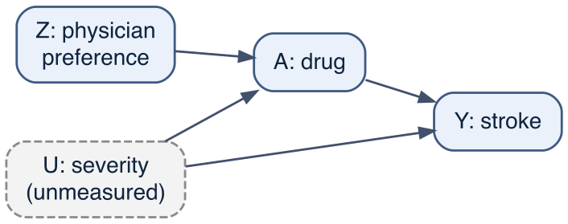
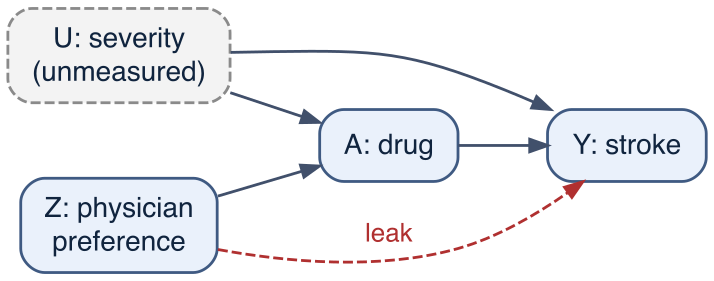
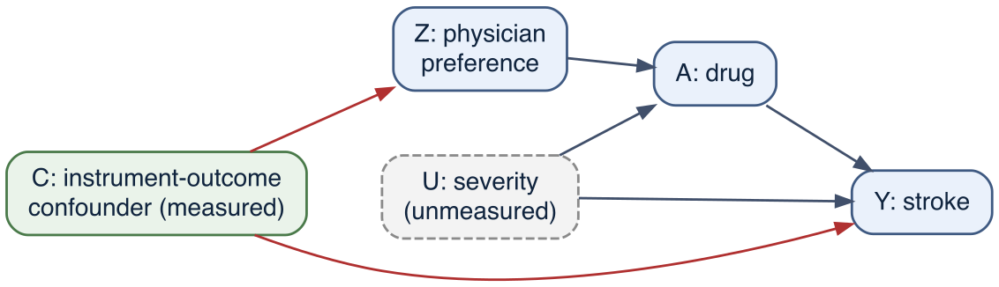

Every method in Part III rested on the same promise: measure the confounders, and the treated and untreated can be made comparable. Standardisation, inverse-probability weighting, the g-formula and the mediation estimator all fail in the same way if a confounder is left unmeasured. The cohort was built with this danger in it — severity is a strong confounder by indication, and a real study would measure it only partly, if at all. When the confounder cannot be measured, no amount of adjustment recovers the effect, and the methods covered so far fail.
Instrumental variables take a different route.1 Instead of trying to block the back-door path, they find a third variable — an instrument — that nudges treatment without being connected to the outcome in any other way, and use only the variation in treatment that the instrument creates. That variation is, by construction, unrelated to the confounders, so the slice of the treatment–outcome association it traces out is unconfounded even when the confounder is unmeasured. We are then free from the burden of identifying the outcome confounders and collecting good-quality data on them, which is a substantial gain. The burden is transferred rather than removed, however. Using an instrument replaces the classic A <- C -> Y confounding with two new liabilities: an assumption the data cannot check, whose mild violation is amplified rather than diluted (shown below), and, in most applications, a fresh confounding of the instrument itself, Z <- C -> Y, that must be measured and adjusted for. Both are developed in later sections. However, the cost is steep: the method rests on assumptions that cannot be checked from the data, it is far less precise than adjustment, and it answers a narrower question than the population average effect. This chapter develops the idea on the cohort’s instrument and shows each of those costs in turn.
18.1 When the confounder cannot be measured
The hurried analyst’s crude comparison is confounded by indication: the sicker patients are treated, so the treated look worse.
The crude risk ratio, 1.67, makes the drug look harmful; the true effect is protective (0.6). Chapters 12 and 14 corrected this by standardising over severity. Suppose now that severity is not in the data. There is nothing to standardise over, and the crude estimate is all that adjustment can give.
The cohort carries a way out. Each patient’s prescription was influenced by their physician’s prescribing preference, pref: some physicians lean towards the drug, others away from it, and which physician a patient happens to see is unrelated to how sick the patient is. Preference moves treatment — a patient seen by a drug-favouring physician is more likely to be treated — but, if preference is otherwise unrelated to the patient’s prognosis, it touches stroke risk only through whether the drug is taken. A variable of this kind is an instrument, and a physician’s prescribing preference is a standard one in pharmacoepidemiology.2

Figure 18.1: The instrumental-variable structure. The instrument Z (physician preference) affects treatment A but reaches the outcome Y only through A. The confounder U (severity) is unmeasured, so the A-Y relationship cannot be deconfounded by adjustment. The instrument helps because there is no arrow Z -> Y (the exclusion restriction) and no common cause of Z and U (the instrument is as good as randomly assigned).
18.2 The instrument and its assumptions
A variable can be an instrument if it satisfies three conditions, to which a fourth is usually added so that the estimate can be interpreted.3
Relevance. The instrument affects treatment: Z -> A is a real arrow, and a strong one. This is the only assumption the data can confirm, by looking at the first stage — how much treatment shifts with the instrument.
Exclusion. The instrument affects the outcome only through treatment: there is no arrow Z -> Y and no other path from Z to Y. Physician preference must not touch stroke risk except by changing whether the drug is taken. This cannot be checked from the data.
Independence (instrument exchangeability). The instrument shares no common cause with the outcome: nothing confounds the Z -> Y relationship. Here it holds because preference is assigned at random with respect to the patient. In a real study it must be argued — for example, that drug-favouring physicians do not also see systematically sicker patients. This too cannot be checked.
Monotonicity. The instrument moves everyone’s treatment in the same direction or not at all: encouragement never deters a patient who would otherwise have been treated. There are no “defiers”. This makes the estimate interpretable as a specific subgroup effect (see below).
Relevance and exclusion together are what let the instrument work: the instrument creates variation in treatment (relevance) that is clean of any path to the outcome except through treatment (exclusion). Independence ensures the instrument’s own variation is not itself confounded.
18.3 The Wald estimator
The estimator follows from the structure. The instrument shifts the chance of treatment by the first-stage amount, and it shifts the outcome by the intention-to-treat (ITT) amount — the raw association between instrument and outcome. Under the assumptions, the only reason the instrument moves the outcome at all is that it moved treatment, so dividing the outcome shift by the treatment shift rescales the ITT into the effect of treatment itself. This ratio is the Wald estimator.
first_stage <-mean(df$drug[df$pref ==1]) -mean(df$drug[df$pref ==0])itt <-mean(df$stroke[df$pref ==1]) -mean(df$stroke[df$pref ==0])wald <- itt / first_stagec(first_stage = first_stage, ITT = itt, Wald = wald)
first_stage ITT Wald
0.219713726 -0.006074035 -0.027645223
Preference raises the chance of treatment by 0.22 — a strong first stage. The intention-to-treat effect is small, -0.0061, because preference changes the treatment of only a minority of patients. Dividing one by the other gives a Wald estimate of -0.0276 on the risk-difference scale: protective, and close to the true effect, where the crude estimate was harmful. For a binary instrument the Wald ratio is identical to two-stage least squares, the estimator usually named in this context — regress treatment on the instrument, then regress the outcome on the fitted treatment.
drug_hat <-predict(lm(drug ~ pref, data = df)) # first stagecoef(lm(df$stroke ~ drug_hat))[2] # second stage = Wald
drug_hat
-0.02764522
The instrument bought a protective estimate without ever measuring severity. That is the whole appeal: it works in the presence of the unmeasured confounder that defeated adjustment.
18.4 Bayesian estimation with brms
The Wald ratio and two-stage least squares are point estimators, and their uncertainty has to be recovered by a separate device — the bootstrap used later in this chapter — because the standard error of a ratio, and of a second stage that treats the fitted treatment as if it were known, is awkward to write down. A Bayesian fit avoids both steps: the two stages are estimated jointly, and every quantity derived from them is a posterior that already carries the first-stage uncertainty.
The Bayesian counterpart of two-stage least squares is a single model of two responses at once — treatment and stroke — fitted as a joint system whose residuals are allowed to correlate. The instrument enters the treatment equation and is absent from the outcome equation; that absence is the exclusion restriction written into the model structure, since preference is given a path to treatment but none to stroke. The unmeasured confounding is not removed. It is absorbed into the residual correlation between the two equations, which the model estimates rather than fixing at zero. Because that correlation is estimated, the drug coefficient in the outcome equation is separated from the confounding, and it is the instrument — present in one equation, absent from the other — that identifies it.
Both equations use a Gaussian likelihood, so treatment and stroke are fitted as linear-probability outcomes and the drug coefficient is a risk difference, on the same scale as the Wald estimate. The residual-correlation construction is a property of this linear system and does not carry over unchanged to a log or logit link, so the risk-ratio Poisson working model used elsewhere in the book is set aside here.
f_drug <-bf(drug ~ pref) # first stage: instrument -> treatmentf_stroke <-bf(stroke ~ drug) # outcome: no pref term encodes exclusioniv_priors <-c(prior(normal(0, 1), class ="b", resp ="drug"),prior(normal(0, 1), class ="b", resp ="stroke"),prior(lkj(2), class ="rescor"))iv_fit <-brm(f_drug + f_stroke +set_rescor(TRUE),family =gaussian(), data = df, prior = iv_priors,chains =4, iter =1500, warmup =750, seed =2024,file ="models/ch17_iv", file_refit ="on_change")iv_ps <-posterior_summary(iv_fit,variable =c("b_drug_pref", "b_stroke_drug", "rescor__drug__stroke"))round(iv_ps, 4)
The first-stage coefficient, 0.22, reproduces the first stage computed by hand above. The drug coefficient in the outcome equation, -0.0274 with a 95% credible interval of -0.044 to -0.011, is the Bayesian IV estimate on the risk-difference scale: protective, and matching the Wald value of -0.0276. Its credible interval is the Bayesian counterpart of the bootstrap interval reported below and delivers the same verdict — the small first stage in the denominator makes the effect imprecise — but it comes straight from the joint posterior rather than from resampling.
Reading the effect off that coefficient is a shortcut, and it is exact only because of the model’s simple form: the outcome equation is linear with drug as its sole predictor, so every patient’s modelled risk difference is the same slope, and averaging over patients leaves it unchanged. The book’s general practice is not to interpret coefficients but to turn a fitted model into an effect by prediction — set drug to 1 and to 0 for each patient, take the difference in predicted risk, and average — using marginaleffects, which also carries the full posterior into the contrast.
The average risk difference is -0.0276 (95% CrI -0.044 to -0.011), reproducing the coefficient because here the two are the same quantity. The resp = "stroke" argument selects the outcome equation of the joint model; without it avg_comparisons() reports a contrast for each response, and the one for the drug equation is zero because drug does not predict itself. This prediction-based form is the one to prefer in general: as soon as the outcome model carries other covariates or a non-identity link — as the Poisson models elsewhere in the book do — the coefficient and the marginal effect part company, and only the averaged prediction is the causal contrast on the scale of interest.
The residual correlation, 0.121 (95% CrI 0.083 to 0.159), is the confounding by indication made visible. It is positive because the unmeasured severity raises both the chance of treatment and the risk of stroke, and the crude comparison mistook that shared dependence for an effect of the drug. Adjustment would have to measure severity to remove it; the IV model instead estimates it as a nuisance correlation and leaves the drug coefficient uncontaminated. That is the same protection the Wald ratio gives, obtained here inside a single fitted model that reports its own uncertainty.
18.5 What the instrument estimates: the complier effect
The Wald estimate is not the population average effect. To see what it is, sort patients by how they would respond to the instrument, using the potential treatments D(0) and D(1) — what each patient would take if their physician disfavoured or favoured the drug. Four types are possible.
df$type <-with(o, dplyr::case_when( D0 ==1& D1 ==1~"always-taker", # treated regardless of the physician D0 ==0& D1 ==0~"never-taker", # untreated regardless D0 ==0& D1 ==1~"complier", # treated only if the physician favours it D0 ==1& D1 ==0~"defier")) # the reverse -- ruled out by monotonicityround(prop.table(table(df$type)), 3)
There are no defiers, as monotonicity requires, and the cohort splits into 44% always-takers, 35% never-takers, and 22% compliers. The instrument moves the treatment of the compliers alone: always- and never-takers do the same thing whatever their physician prefers, so the instrument tells us nothing about them. Under the four assumptions the Wald estimator equals the average treatment effect among the compliers — the local average treatment effect (LATE), or complier average effect.4 Notice that the first stage, 0.22, equals the complier proportion: the share of patients whose treatment the instrument actually changes.
The cohort lets us check this against the truth and, more pointedly, against the population average.
The Wald estimate targets the true complier effect, -0.019, not the population average effect, -0.0272. These differ because compliers are a particular subgroup, and the cohort makes the difference concrete: the compliers are the patients on the margin of treatment.
Who is who. Always-takers are the sickest (treated whatever the physician prefers); never-takers the healthiest; compliers sit in between.
type
n
severity
age
diabetes
treated
always-taker
21810
0.83
65.01
0.34
1.00
complier
10816
0.02
61.58
0.21
0.51
never-taker
17374
-0.69
58.74
0.14
0.00
Always-takers have the highest severity — they are sick enough to be treated regardless of preference. Never-takers are the healthiest. Compliers sit between, and the LATE is the drug’s effect in them. The instrument can say nothing about the effect in the always-takers (the patients a clinician most wants to know about) because their treatment never changes. This is the standing limitation of instrumental variables: they identify an effect in an unlabelled subgroup defined by responsiveness to the instrument, which is rarely the group a decision is about, and whose membership cannot be determined for any individual.
18.6 Precision is the other cost
The Wald estimate recovers the complier effect, but with much wider uncertainty than adjustment would give, because the small first stage in the denominator magnifies the sampling error of the ITT.
The 95% bootstrap interval spans roughly -0.045 to -0.012 — wide enough to be compatible with effects from modest to large. The Bayesian credible interval from the joint brms model above covers much the same range, for the same reason: it is the first stage in the denominator, not the choice of estimator, that governs the width. An instrument with a weaker first stage would widen either interval further; a weak instrument can leave the estimate almost unidentified. The protection IV gives against unmeasured confounding is paid for in variance.
There is a further cost specific to the setting this chapter is built for. The correlation a valid instrument can have with treatment is bounded, and the bound tightens as confounding grows: when confounding by indication is strong, no instrument that satisfies the assumptions can be strongly correlated with treatment.5 The implication is uncomfortable. The situation that motivates instrumental variables — unmeasured confounding severe enough to defeat adjustment — is the situation in which a strong first stage is hardest to obtain, and in which a first stage that is strong should raise the suspicion that the instrument reaches the outcome by some route other than treatment. Weakness and invalidity are therefore not independent problems: demanding a stronger instrument to buy precision tends to cost validity. The finite-sample behaviour compounds this — with a weak instrument the estimate is biased in small samples,6 and the direction of that bias is toward the ordinary confounded estimate, its magnitude approaching that of the naïve comparison as the instrument’s explanatory power falls to zero,7 so a weak instrument can be both imprecise and biased in the very direction IV was meant to correct. A common rule of thumb keeps the first-stage F statistic above about 10,8 but no threshold rescues an instrument that is weak because the confounding is strong.
18.7 When the instrument is invalid
Exclusion and independence cannot be verified, and a small violation can do large damage. Suppose physician preference is not quite clean — drug-favouring physicians also tend to manage their patients differently in some way that affects stroke risk directly, a small arrow Z -> Y. The cohort’s invalid-instrument variant adds such a leak.

Figure 18.2: An invalid instrument. A direct path Z -> Y (dashed) violates the exclusion restriction: physician preference now affects stroke through a route other than the drug. The instrument-outcome association no longer reflects the treatment effect alone, and the Wald estimator divides a contaminated numerator by the first stage.
ITT Wald true_LATE
0.001240323 0.005645180 -0.020562106
The leak reverses the verdict. The intention-to-treat effect is now positive, 0.0012, because preference raises stroke risk through the leaked path as well as lowering it through the drug; the Wald estimate is 0.0056, the wrong sign against a true complier effect of -0.0206. The estimator cannot tell the two routes apart: it attributes the whole instrument–outcome association to treatment, so the direct effect of preference is misread as an effect of the drug. A modest violation of an untestable assumption has turned a protective drug into an apparently harmful one — the same failure the crude analysis made, reached by a different road.
18.8 Conditional instruments and instrument–outcome confounding
The invalid example above breaks the exclusion restriction: a direct arrow Z -> Y. A second, distinct way an instrument fails breaks independence: the instrument shares a common cause with the outcome, Z <- C -> Y. Physician preference would fail this way if drug-favouring physicians also worked in better-resourced practices that lowered stroke risk through routes other than the drug. The instrument-outcome association would then mix the effect of treatment with the effect of C, and the Wald estimator, which attributes the whole association to treatment, would be biased.
Most instruments used in epidemiology are not valid marginally; they are valid only conditional on measured covariates — independence holds within strata of some C, not overall. Such an instrument is a conditional instrument, and the analysis must adjust for C to block the path Z <- C -> Y, exactly as a back-door path is blocked in ordinary adjustment. The variable C is an instrument-outcome confounder.

Figure 18.3: A conditional instrument. A measured common cause C of the instrument Z and the outcome Y — an instrument-outcome confounder — opens a path Z <- C -> Y (red) that biases the instrument-outcome association. The instrument is valid only conditional on C: adjusting for C blocks the path, provided C is not a collider and does not lie on the Z -> A -> Y chain.
Conditioning to rescue an instrument is not free. Adjusting for the wrong variable — a collider, or a variable on the Z -> A -> Y chain — introduces bias rather than removing it, and conditioning changes the complier subpopulation, so the local average treatment effect shifts with the adjustment set: a conditional IV estimates a within-stratum local effect, not the marginal one. Reporting the instrument, the exact adjustment set, and the assumed structure is the minimum standard for an analysis a reader can judge.9
This threat is not a corner case. An audit of 187 published comparative-effectiveness IV studies found plausible unadjusted instrument-outcome confounders in every one — patient race, socioeconomic status, clinical risk factors, urban or rural residence, facility and procedure volume, and co-occurring treatments — and only a small minority had looked outside the study data for them.10 Instrument-outcome confounding is the modal threat in applied IV, not a rare one.
18.9 Instruments in epidemiological practice
The same audit gives the commonest instrument families in observational epidemiology, in rough order of use: physician or prescriber preference (this chapter’s pref),11 regional or geographic variation in practice, facility or hospital variation, and distance to a treating facility (Exercise 5).12 Distinct from these is Mendelian randomisation, which uses germline genotype as an instrument for a modifiable exposure: alleles are assorted at conception, so the genotype-outcome association is largely free of the reverse causation and confounding that distort conventional observational studies.13
The families differ mainly in how defensible their untestable assumptions are, not in relevance. Genetic instruments have the strongest a priori case for independence and exclusion — germline alleles are fixed at conception, cannot be caused by the outcome, and are approximately randomly assorted with respect to later environment — so both Z <- C -> Y confounding and reverse causation are structurally unlikely. Their characteristic failure is a specific exclusion violation, pleiotropy (the variant affects the outcome through a second pathway), together with linkage disequilibrium and developmental buffering; and they answer a lifelong-exposure question that need not match a short-term drug effect.14 Preference, distance and practice-variation instruments are usually strong on relevance but fragile on independence, which is what the audit found. A working order of assumption-credibility runs roughly: germline genetic, then policy or natural-experiment quasi-randomisation, then provider preference or distance.
A caution on the evidence base itself. For adjustment-based observational designs there is now a large benchmarking literature comparing estimates against randomised trials, including the target-trial-emulation programme of Chapters 13 and 14. No equivalent systematic benchmark exists for conventional (observational) instrumental-variable estimates. The Cochrane methodological review comparing observational and randomised effect estimates — first published in 2014 and updated in 2024, finding little overall difference between the two (a pooled ratio of ratios of 1.08) — draws its observational arm entirely from cohort, case-control and cross-sectional designs; the 2014 version noted explicitly that no review had compared randomised trials against observational studies using instrumental variables or marginal structural models, and the 2024 update analyses no such estimator either.1516 For Mendelian randomisation the position has begun to change: a 2023 study systematically compared MR and RCT evidence across 26 exposure–outcome case studies (drawn from 54 MR and 77 RCT publications), though its main conclusion was that disciplined triangulation is methodologically demanding — requiring matched phenotypes, intervention intensity and duration, study populations and comparators — rather than a single summary agreement rate.17 The other substitutes are within-study diagnostics that ask whether the IV or the adjusted estimate is less biased in a given dataset, using negative-control outcomes and covariate balance,18 and single-target genetic validations such as a model of the heart-rate-lowering drug ivabradine that recapitulated its trial findings (benefit in heart failure, raised atrial-fibrillation risk, no effect on myocardial infarction).19 The credibility of an IV analysis therefore still rests largely on the substantive case for the instrument, not on an empirical track record of the method.
This is the trade instrumental variables offer.20 They remove the bias from unmeasured confounding, which adjustment cannot touch, but they replace it with sensitivity to exclusion and independence, which the data cannot check, and they deliver a local estimate with wide intervals. Whether the trade is worth making depends on how defensible the instrument is — which is a matter of argument about the subject, not of statistics. The quasi-experimental designs of Chapter 18 are variations on the same idea: find a source of treatment variation that is as good as randomised, and reason from it. The sensitivity analysis of Chapter 19 asks, for IV as for adjustment, how large a violation would have to be to overturn the conclusion.
18.10 Key points
Instrumental variables estimate a causal effect without measuring the confounders. They use only the treatment variation induced by an instrument, which is clean of the confounding because the instrument is unrelated to it.
An instrument needs relevance (affects treatment — testable), exclusion (affects the outcome only through treatment — untestable), and independence (unconfounded with the outcome — untestable); monotonicity (no defiers) makes the estimate interpretable.
The Wald estimator is the intention-to-treat effect divided by the first stage; for a binary instrument it equals two-stage least squares.
The Bayesian version fits treatment and outcome jointly in brms as a two-equation system with correlated residuals (set_rescor(TRUE)), the instrument in the treatment equation only. The drug coefficient in the outcome equation is the IV estimate, its posterior already carrying the first-stage uncertainty, and the residual correlation estimates the unmeasured confounding rather than assuming it away.
Under the assumptions, IV estimates the local average treatment effect — the effect in the compliers, the subgroup whose treatment the instrument moves. This is generally not the population average effect, and the compliers cannot be identified individually.
IV is imprecise (a weak first stage inflates the variance) and fragile (a small violation of exclusion, amplified by division by the first stage, can reverse the sign). It trades the unverifiable assumptions of adjustment for different unverifiable assumptions.
Most instruments are only conditionally valid. Independence usually holds within strata of measured covariates, not marginally; the common cause of instrument and outcome is an instrument-outcome confounder that must be adjusted for — the modal threat in applied IV, not a rare one. Conditioning changes the complier subgroup, so the estimand shifts with the adjustment set.
Instruments differ in credibility. Genetic (Mendelian randomisation) instruments have the strongest case for the untestable assumptions; preference, distance and practice-variation instruments are strong on relevance but fragile on independence.
The IV trade is a transfer of assumptions, not their removal, and IV is more sensitive to its assumptions than adjustment. Under strong confounding a valid instrument cannot be strongly correlated with treatment, and a small exclusion violation is amplified by the first stage. Unlike adjustment-based designs, conventional IV has no systematic empirical benchmark against randomised trials, though systematic Mendelian-randomisation-versus-trial comparisons have begun to appear.
18.11 Exercises
Weaken the instrument. Re-simulate with a smaller effect of preference on treatment (reduce d_pref in the parameters). Recompute the first stage, the Wald estimate, and the bootstrap interval. How does the interval change as the first stage shrinks, and what does this say about weak instruments?
The complier proportion. Confirm numerically that the first stage equals the proportion of compliers, and explain why this identity holds under monotonicity. What would a defier do to it?
Vary the leak. In the invalid variant, the exclusion violation is governed by leak_pref. Sweep it from 0 upwards and plot the Wald estimate against the leak size. How large a leak is needed to move the estimate to the null, and how does this compare with the size of the true effect? Relate your answer to Chapter 19.
LATE versus ATE by design. Construct a setting in which the complier effect and the population average effect coincide (hint: make the treatment effect constant across patients in the simulation). Verify that the Wald estimate then targets the ATE. Explain why effect heterogeneity is what separates the two estimands.
Conceptual. A study uses distance to the nearest specialist hospital as an instrument for whether a patient receives a particular procedure. State the three core assumptions in this context, give one concrete way each could fail, and say which of them you could examine in the data and which you could only argue for.
Greenland S, “An introduction to instrumental variables for epidemiologists,” Int J Epidemiol 2000;29:722-729 (DOI).↩︎
Brookhart MA, Wang PS, Solomon DH, Schneeweiss S, “Evaluating short-term drug effects using a physician-specific prescribing preference as an instrumental variable,” Epidemiology 2006;17:268-275 (DOI).↩︎
Hernán MA, Robins JM, “Instruments for causal inference: an epidemiologist’s dream?,” Epidemiology 2006;17:360-372 (DOI).↩︎
Angrist JD, Imbens GW, Rubin DB, “Identification of Causal Effects Using Instrumental Variables,” J Am Stat Assoc 1996;91:444-455. (Not indexed in PubMed; bibliographic details verified by web search, DOI not independently confirmed.)↩︎
Martens EP, Pestman WR, de Boer A, Belitser SV, Klungel OH, “Instrumental variables: application and limitations,” Epidemiology 2006;17:260-267 (DOI).↩︎
Martens EP, Pestman WR, de Boer A, Belitser SV, Klungel OH, “Instrumental variables: application and limitations,” Epidemiology 2006;17:260-267 (DOI).↩︎
Bound J, Jaeger DA, Baker RM, “Problems with Instrumental Variables Estimation When the Correlation Between the Instruments and the Endogenous Explanatory Variable Is Weak,” J Am Stat Assoc 1995;90:443-450 (DOI). (Econometrics journal, not indexed in PubMed; bibliographic details and DOI verified via the publisher and CrossRef.)↩︎
Staiger D, Stock JH, “Instrumental Variables Regression with Weak Instruments,” Econometrica 1997;65:557-586 (DOI). (Econometrics journal, not indexed in PubMed; bibliographic details and DOI verified via CrossRef.)↩︎
Swanson SA, Hernán MA, “Commentary: how to report instrumental variable analyses (suggestions welcome),” Epidemiology 2013;24:370-374 (DOI).↩︎
Garabedian LF, Chu P, Toh S, Zaslavsky AM, Soumerai SB, “Potential bias of instrumental variable analyses for observational comparative effectiveness research,” Ann Intern Med 2014;161:131-138 (DOI).↩︎
Brookhart MA, Wang PS, Solomon DH, Schneeweiss S, “Evaluating short-term drug effects using a physician-specific prescribing preference as an instrumental variable,” Epidemiology 2006;17:268-275 (DOI).↩︎
Garabedian LF, Chu P, Toh S, Zaslavsky AM, Soumerai SB, “Potential bias of instrumental variable analyses for observational comparative effectiveness research,” Ann Intern Med 2014;161:131-138 (DOI).↩︎
Davey Smith G, Ebrahim S, “‘Mendelian randomization’: can genetic epidemiology contribute to understanding environmental determinants of disease?,” Int J Epidemiol 2003;32:1-22 (DOI).↩︎
Davey Smith G, Ebrahim S, “‘Mendelian randomization’: can genetic epidemiology contribute to understanding environmental determinants of disease?,” Int J Epidemiol 2003;32:1-22 (DOI).↩︎
Anglemyer A, Horvath HT, Bero L, “Healthcare outcomes assessed with observational study designs compared with those assessed in randomized trials,” Cochrane Database Syst Rev 2014;2014:MR000034 (DOI).↩︎
Toews I, Anglemyer A, Nyirenda JL, Alsaid D, Balduzzi S, Grummich K, Schwingshackl L, Bero L, “Healthcare outcomes assessed with observational study designs compared with those assessed in randomized trials: a meta-epidemiological study,” Cochrane Database Syst Rev 2024;1:MR000034 (DOI).↩︎
Sobczyk MK, Zheng J, Davey Smith G, Gaunt TR, “Systematic comparison of Mendelian randomisation studies and randomised controlled trials using electronic databases,” BMJ Open 2023;13:e072087 (DOI).↩︎
Davies NM, Thomas KH, Taylor AE, Taylor GMJ, Martin RM, Munafò MR, Windmeijer F, “How to compare instrumental variable and conventional regression analyses using negative controls and bias plots,” Int J Epidemiol 2017;46:2067-2077 (DOI).↩︎
Legault MA, Sandoval J, Provost S, et al., “A genetic model of ivabradine recapitulates results from randomized clinical trials,” PLoS One 2020;15:e0236193 (DOI).↩︎
Baiocchi M, Cheng J, Small DS, “Instrumental variable methods for causal inference,” Stat Med 2014;33:2297-2340 (DOI).↩︎